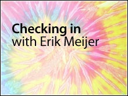
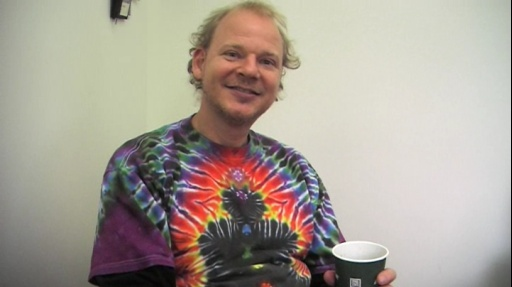
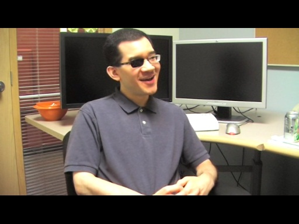
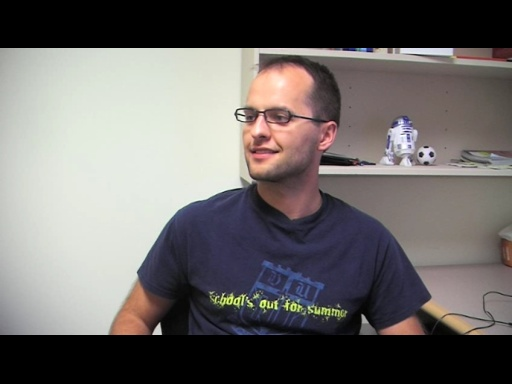
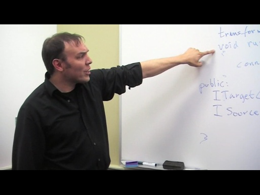
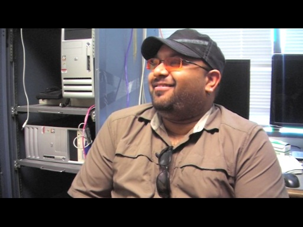
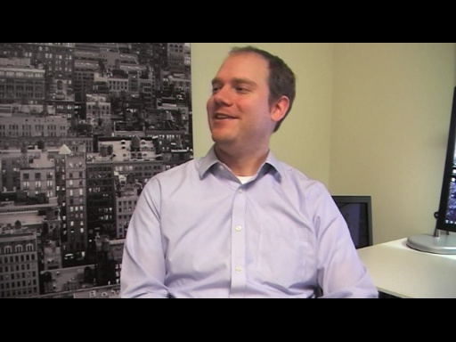
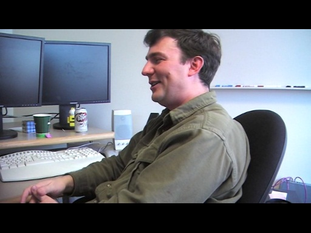
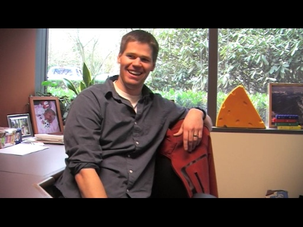

Erik Meijer travels around Microsoft, meeting the people who design, write, and check in code for a living. The focus is on who they are, how they got into software development, what they're working o…
Checking In with Erik Meijer: Erik Meijer[MP4] [1:15:21] [2014/09/06]No, Erik Meijer doesn't interview himself! :) However, it actually is checking in with Erik Meijer (it's been WAY too long since we last caught up on camera...), so we figured it was a great idea to…
Checking In: Larry Osterman - 26 Years of Programming at Microsoft and Counting[MP4] [1:08:21] [2011/12/25]Larry Osterman is a legend and one of Channel 9's favorite personalities - it's been too long since you've been on C9, Larry! Now, what would happen if C9 hero Erik Meijer interviewed Larry? Well,…
Checking In: Stephan T. Lavavej - Inside STL (the person, not the library)[MP4] [1:10:02] [2011/10/13]Stephan T. Lavavej is a Channel 9 hero. You've learned a great deal from him over the years, but you've not really learned much about him. How did STL—that's what we call him since, well, look at his…
Checking In: Marcin Dobosz - MVC, NuGet and the Open Web[MP4] [0:39:45] [2011/09/09] Welcome to the latest edition of Checking In with Erik Meijer! This time around Erik interrogates Marcin Dobosz, a software engineer working on MVC and NuGet packaging. Marcin writes tools that makes…
Checking In: Rick Molloy - Gone Native[MP4] [0:53:14] [2011/08/18] Welcome to another edition of Checking In with Erik Meijer! This time we subject native (C++) developer Rick Molloy to Erik's friendly interrogation. You've met Rick before (here, here, here,…
Checking In: Gov Maharaj - Shimming the World, Dreaming in Assembly[MP4] [1:04:00] [2011/07/15] Gov Maharaj is a developer on the Windows Compatibility team. You know Gov from the popular C9 show, Defrag. He spends most of his time solving problems reported by customers over the phone, in…
Checking In: Jeff Wilcox - Writing the WP7 App Platform in C# and C++[MP4] [1:01:43] [2011/04/21] Jeff Wilcox is a developer on the Silverlight team. He spends a lot of his time (~80%) coding in C++. Strange? Of course not... Silverlight is a portable managed runtime and C++ (C…
Checking In: Eric Lippert - On Compiler Evolution, Designing C# and Blogging[MP4] [1:03:12] [2011/04/06] Happy Birthday, Channel 9!!! We are 7 years old today! Hard to believe... What a great 7 years it has been. THANK YOU, NINERS! In celebration, we bring you the latest episode of Checking In with…
Checking In: Jeff Derstadt - Programming Data and the Entity Framework[MP4] [0:58:07] [2011/03/24] Jeff Derstadt is a developer on the Entity Framework team, and in this video Erik visits Jeff to learn more about what he does day to day. Jeff and Erik talk about programming data, generally, and…
Checking In: Mike Sampson - Channel 9 Cloud[MP4] [0:57:15] [2011/03/16] We've started a new Show on Channel 9 and it's the result of a conversation I had with Erik Meijer just after the Herb Sutter E2E before Christmas 2010. Erik told me that he wanted to go around the…